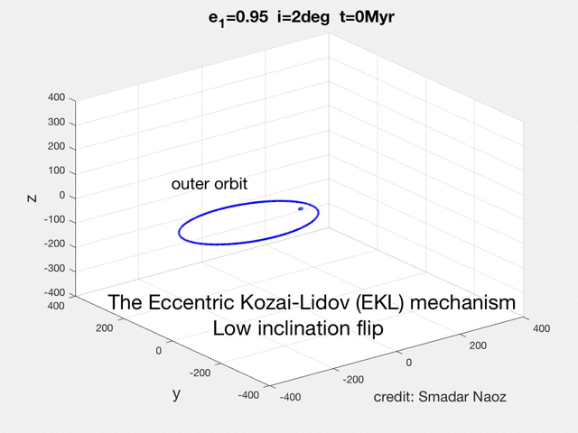

Research
Research Group Hot Jupiters EKL The First Galaxies SIGOs
The Eccentric Kozai-Lidov (EKL) mechanism
The secular approximation for the evolution of hierarchical triple configurations has proven to be very useful in many astrophysical contexts, from planetary, stars and even black holes. Many gravitational triple systems are in a hierarchical configuration; two objects orbit each other in a relatively tight inner binary while the third object is on a much wider orbit (see cartoon).
If the third object is sufficiently distant, an analytic, perturbative approach can be used to calculate the evolution of the system. In the secular approximation, the two orbits torque each other and exchange angular momentum, but not energy. Therefore the orbits can change shape and orientation (on timescales much longer than their orbital periods), but not semimajor axes. For example, for highly inclined triple systems, the Kozai-Lidov mechanism can produce large-amplitude oscillations of the eccentricities and inclinations.
In Naoz et al. (2011a,2013) we showed that the secular hierarchical triple body problem is qualitatively different from what was considered previously. Specifically, we showed that the inner orbit's can flip from prograde to retrograde and back, and can also reach extremely high eccentricities (see movie below).
The movie shows the Eccentric Kozai-Lidov (EKL) dynamical evolution of a hierarchical triple system. The inner orbit has a solar mass star and a test particle. The perturber (brown dwarf in the example in the movie) lays in the horizontal plane. The black line shows the inner's orbit angular momentum and the red arrow shows the z-component (projected on the total angular momentum, which in this case is parallel to the outer orbit). The color of the ring indicates the phase of the object during its orbit. The SMA of the inner orbit is 5AU, and the outer was set at 200AU. This point mass dynamics did not include GR. The EKL mechanism yields this exciting and rich dynamical behavior, which was not thought possible before (e.g., flips, chaos, extreme eccentricity excitations, etc.).
The initial conditions in the movie above assumed high initiation and circular inner orbit. However, the EKL mechanism allows tapping into larger parts of the parameter space considered previously. For example, with Gongjie Li, (e.g., Li et al (2014a),b) we showed that starting from a nearly coplanar system the system can still flip.

As can be seen in the movie the dynamical behavior is qualitatively different from the high inclination flip. The orbit becomes extremely eccentric, and the orbit rolls over.
See The Eccentric Kozai-Lidov Effect and Its Applications
Annual Review of Astronomy and Astrophysics, for more details.
What about Kozai's original work?
Kozai (1962) studied the effects of Jupiter's gravitational perturbation on an inclined asteroid in our own solar system. In the assumed hierarchical configuration, treating the asteroid as a test particle, Kozai (1962) found that its inclination and eccentricity fluctuate on timescales much larger than its orbital period. Jupiter, assumed to be in a circular orbit, carries most of the angular momentum of the system. Due to Jupiter's circular orbit and the negligible mass of the asteroid, the system's potential is axisymmetric, and thus the component of the inner orbit's angular momentum along the total angular momentum is conserved during the evolution.